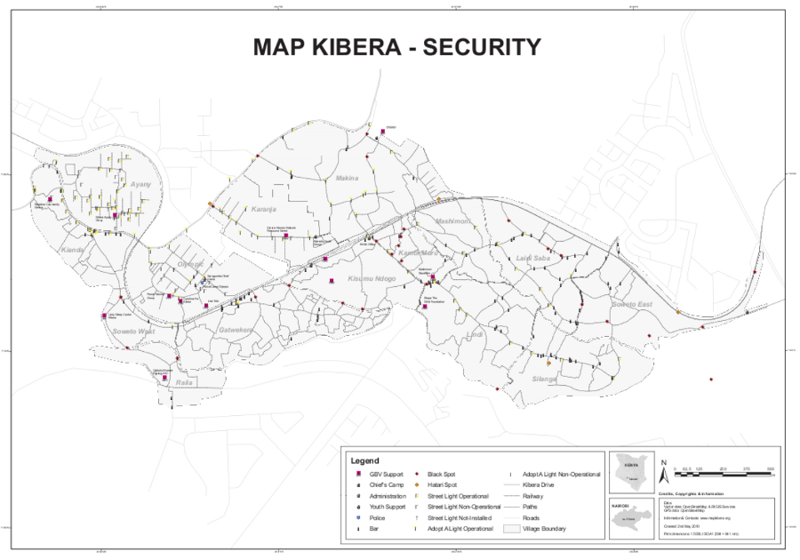
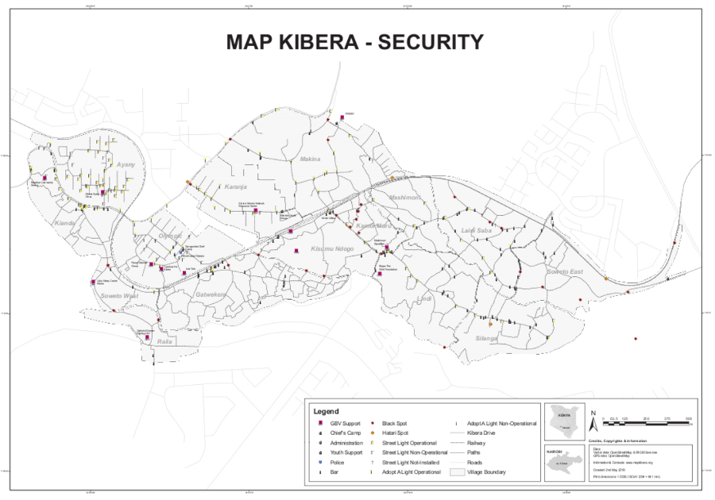
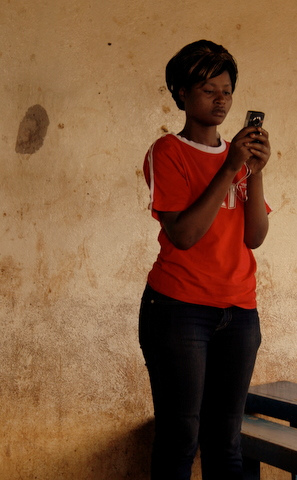

| MAP KIBERA GIRLS SECURITY |
|
|
November 2009 This will be a comprehensive look at Girls Security in Kibera: geographic data, and other data sets, interactive maps, videos media and writing, compendium of actors, active and possible web and SMS applications. |
Map Kibera appreciates the support of UNICEF to engage young people, particularly young women and girls, through the participatory mapping of risks and vulnerabilities in their communities. Through participatory mapping, young people gain new awareness about their surroundings, enabling and empowering them to amplify their voices on critical issues. The process of mapping is helping to identify physical safe and unsafe spaces, as well as provide contextual information to raise awareness and offer advocacy opportunities around the issues of HIV/AIDS vulnerability.

What does the process look like?

|  | I helped lead one of the community meetings with a girls group called Binti Pamoja, which helps young girls deal with gender-based violence. I helped lead a discussion of what we found on the map, as well as the places they felt were safe or dangerous. By this we gained not only local knowledge, but also excitement about the project because we found that the community can respond positively. To me, this is a life-time achievement. - Regynnah Awino, Map Kibera mapper |
- Many young girls who can't afford to go to town dance at nightly funeral parties. They are highly at risk of violence.
- Most dangerous areas are those that are close to natural cover, such as forest at end of Anany as well as area in Silanga near Nairobi dam, these areas are dangerous even in the day because of high reeds and forest cover. These areas are dangerous even during the day.
- Mugging is known to take place in formal areas, particularly on pay day, since these are entry points into Kibera with goods and funds. Also early in the day when shopkeepers and business people may be going out to get stock. Specifically note Makina starting at stage and Karanja Road starting at stage, particularly road leading from this path.
Map Kibera is taking a four-step process to engage young people in the mapping of ricks and vulnerabilities.
- Stakeholder Meetings: The team engages implementers and community-based organizations working on issues of gender-based violence, HIV and AIDS or related topics to identify most appropriate map data to collect.
- Map Data Collection: The Map Kibera team, consisting of 13 young people from the community trained in open source mapping techniques, creates a map around security and vulnerability. This map contains unsafe spaces (i.e. places where drugs and alcohol are consumed), safe spaces (i.e. girl groups, community centers, lighted areas), resources (gender based violence (GBV clinics) and more. This data is loaded to an online free and open source map, then shared with the community in printed form.
- Community Consultations: Using printed maps, tracing paper and colored pens, the mappers lead discussions with girls and young women to discuss safety and vulnerability. The groups discuss the initial map findings, and share opinions on issues including where they feel safe or at risk, their daily routines, where they spend weekend nights, and where drugs and alcohol are consumed.
- Narrative Media: Young people from the community use video, photo and audio to create short narratives about issues facing young people in the community. These narratives will be overlaid with the map data to help better narrate the vulnerabilities of young girls and women.
Stay tuned on this site for mapping and community media updates.

|

|
Maybe make this a wiki page
Data and Schemas
mapkibera blog security
- Application possibilities like Yelp
- Kibera GBV Social Network, Directory